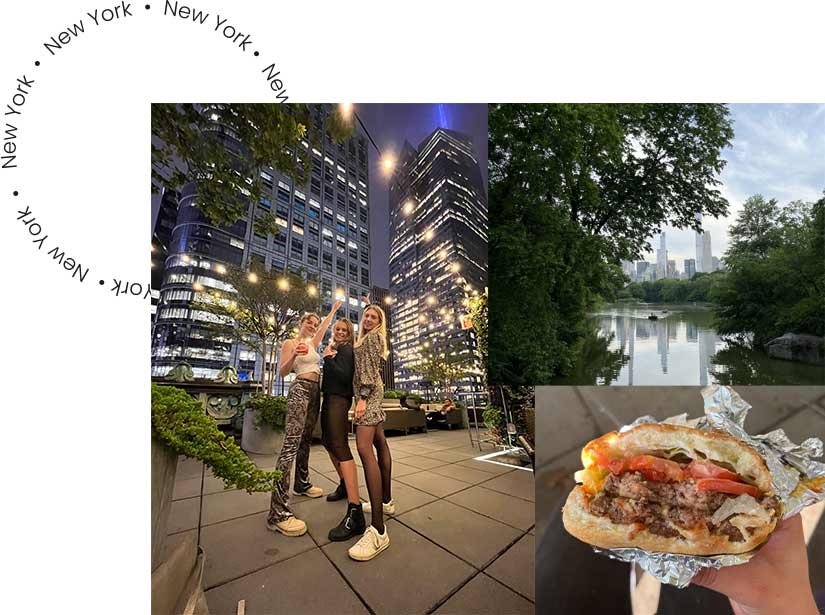
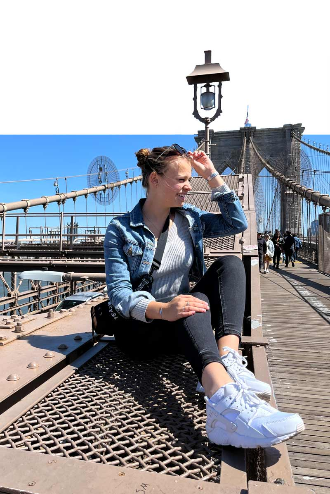
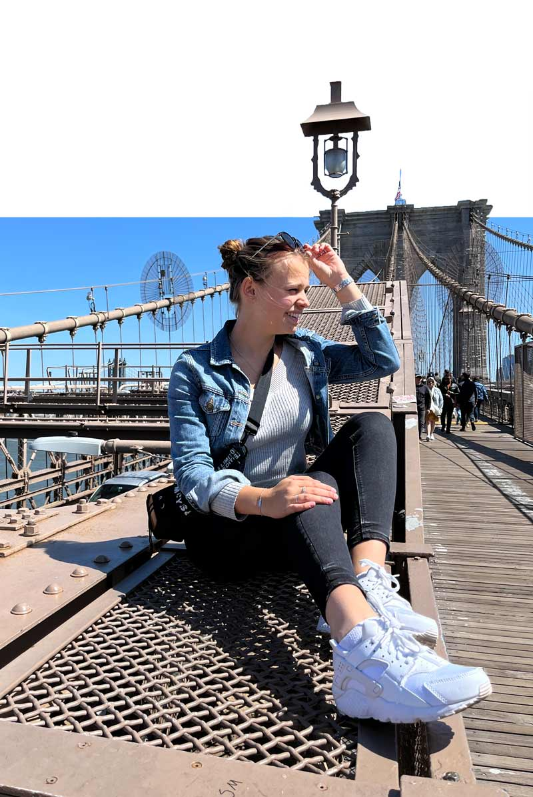

New York
Mijn reis begon in april 2022 naar New York. Ohhh new york… als je de kans hebt om naar new york toe te gaan dan zou ik dat zeker aanraden!
Je komt daar echt in een hele andere wereld. Grote hoge gebouwen, alles XXL (en daarbij bedoel ik niet alleen de mensen),
vierkante straten en gele taxi’s. En ook zoveel mensen, zwervers en afval..! Ondanks dat had de stad ook wel weer iets bijzonders.
Savonds gingen alle lichtjes aan en mensen die ondanks de grote stad toch de gezelligheid probeerde op te zoeken in een eettentje,
mensen die elkaar tegen kwamen in de metro, bosjes bloemen en hotdogs die bijna op elke hoek van de straat verkocht werden.
New York slaapt nooit!
New York heeft 5 stadsdelen; Manhattan, Brooklyn, Queens, Staten Island en the Bronx.
De meeste bezienswaardigheden zitten in Manhattan en Brooklyn.
Ik moet zeggen dat daar ook wel het meeste te doen is en veder zijn het voornamelijk gewoon woonwijken.
Bij mij op school werd destijds ook afgeraden om naar The bronx en Queens toe te gaan ivm veiligheid.
Tip: Om door de stad te kunnen reizen is het makkelijkste om de metro’s te pakken. Het metro systeem
kan wat moeilijk zijn je hebt namelijk metro’s uptown maar ook downtown.
Als je naar boven wilt dan pak je up town en naar beneden pak je down town. Ook is er een handigheidje als Nederlander.
Je kan namelijk je online in checken met je nederlandse bankpas maar het geld gaat er niet vanaf (ik denk een foutje van
het amerikaanse systeem). Zo kan je stiekem toch gratis reizen!

 
